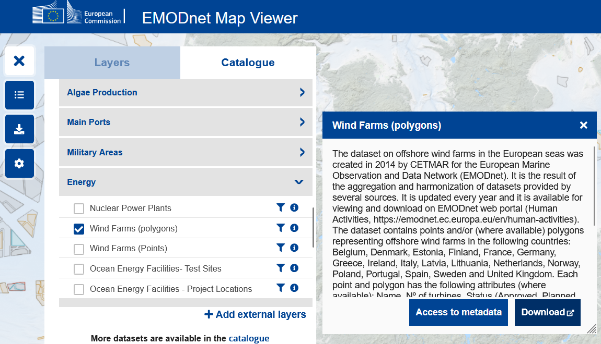
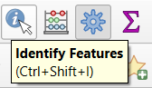
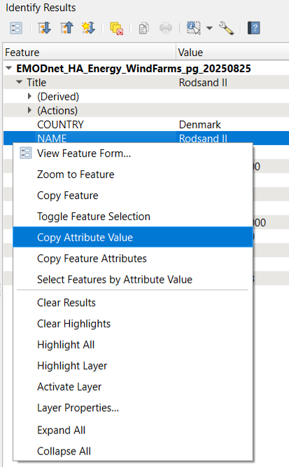
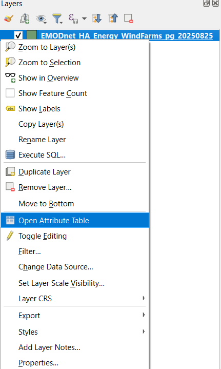
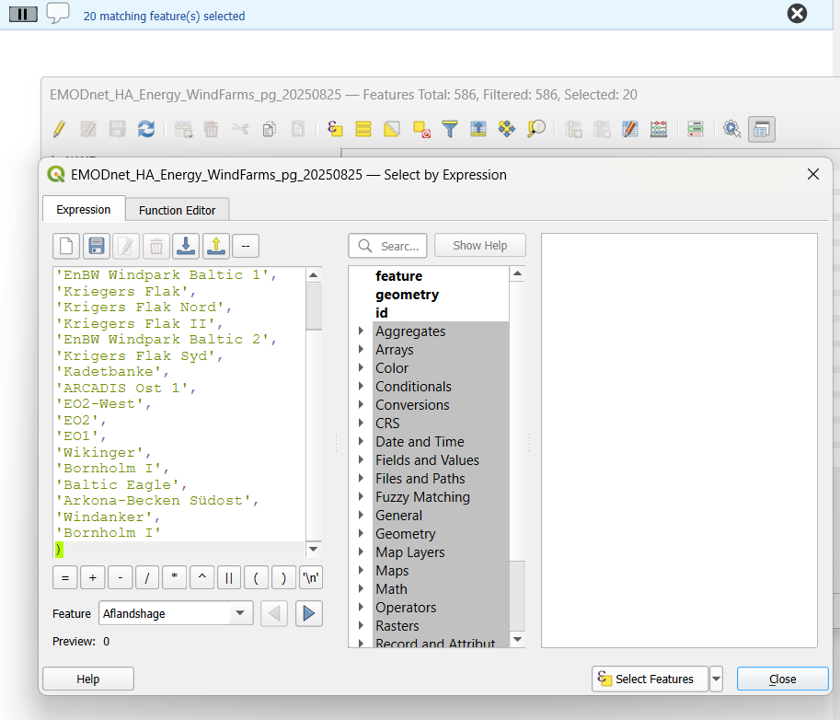
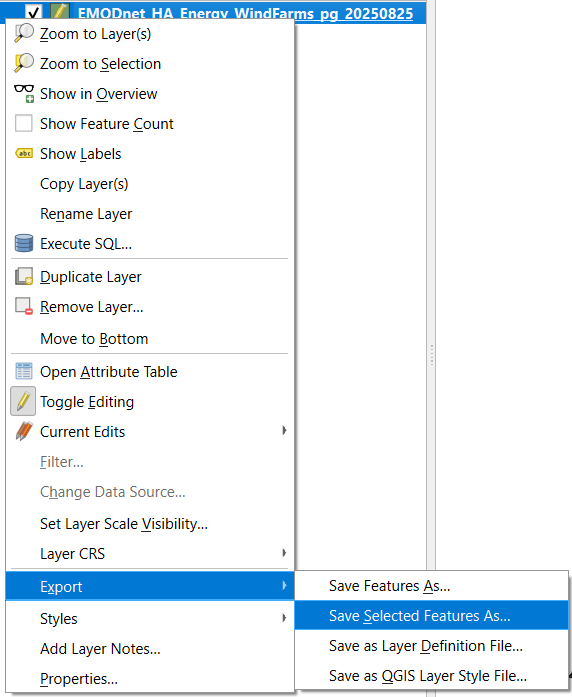
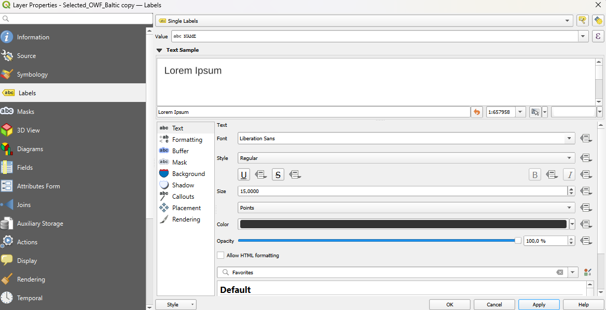
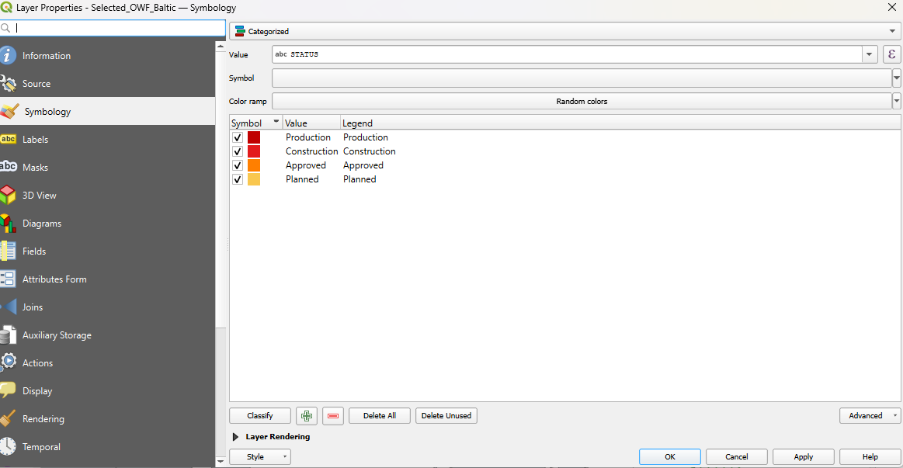
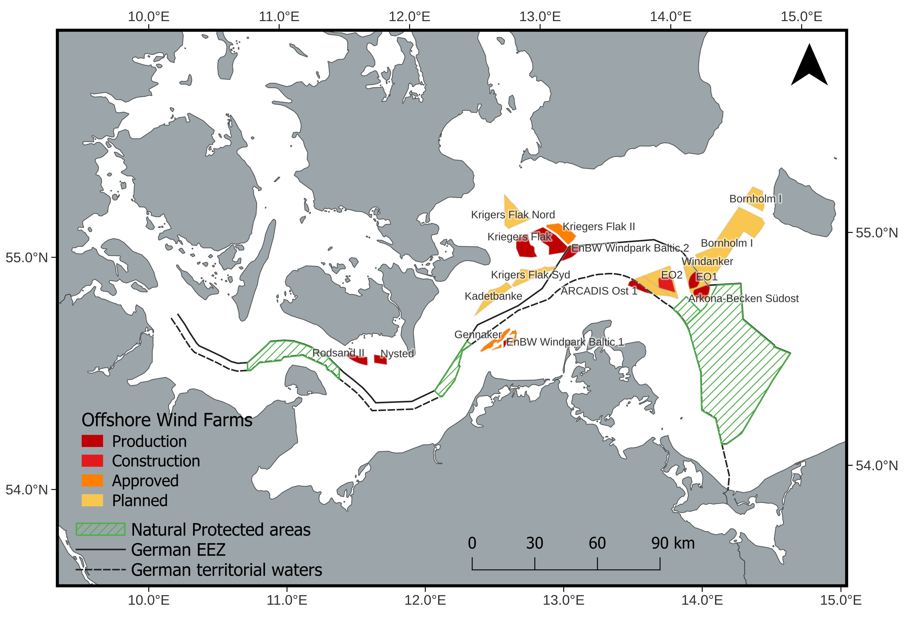

Select polygons of interest and add label per polygon in QGIS
In this blog post, we’ll explore how to select and filter specific features from a layer containing Offshore Wind Farms and add labels to each polygon in QGIS.
Intro
In this post, we will add offshore wind farms (OWFs) in the Baltic Sea, including their names. The tutorial will focus on adding a vector layer, labeling each polygon with its corresponding name, and including the appropriate legend in the final map.
Download
EMODnet is a European initiative that provides free, open-access data on the marine environment of Europe.
It’s designed to support marine research, policy-making, and sustainable ocean development by making reliable marine data easily available.
To download the original data go to EMODnet.
Select human activities > Energy > Wind Farms (polygons)

After clicking in Download, you should end up with two files.
The one with the name EMODnet_HA_Energy_WindFarms_pg_20250825.shp contains the polygons of the OWF.
The other one contains points.
We will be using the one with polygons.
QGIS
Select areas of interest
For this exercise, we will select all OWFs in the Baltic area near Germany.
First, enable the Attributes Toolbar by going to View > Toolbars > Attributes Toolbar.
This will allow you to easy access the Identify Features tool.

Click on the Identify Features tool and click directly on the polygons you are interested in.
When you click on the polygon the selected polygon should change of color.

In addition, when you click on the polygon a window of Identify Results should appear.
For the exercise, locate the NAME field in that window.
From there, select Copy Attribute Value to copy the name of the site you want to work with.

Copy and compile the names of the polygons of interest.
Then, return to the shapefile layer and open its Attribute Table.

In the attribute table, click on Select Features by Expression (the ε icon).
In the expression window, you can enter the names of the selected OWFs for this exercise. Adjust the values as needed to match your specific exercise or project.
NAME IN ('Rodsand II','Nysted','Gennaker','EnBW Windpark Baltic 1','Kriegers Flak','Krigers Flak Nord','Kriegers Flak II','EnBW Windpark Baltic 2','Krigers Flak Syd','Kadetbanke','ARCADIS Ost 1','EO2-West','EO2','EO1','Wikinger','Bornholm I','Baltic Eagle','Arkona-Becken Südost','Windanker','Bornholm I')Afterwards, click on Select Features.
The corresponding polygons will now be highlighted on the map, confirming that they have been successfully selected.
In addition, you will probably see a blue section on the top indicating how many matching ones have been selected.

To save your selected features, right-click on the layer. From the menu that appears, choose Export and then select Save Selected Features As….

Once you save your selected features, they should appear automatically in your project as a new layer.
Single labels
To add single labels to each polygon (here the NAME), go to the Layer > Properties > Label > and select single labels.
For this example, I added a background to the labels to make the names stand out more clearly, and increased the font size to improve readability.

Categorized colors
Assigning a different color to each polygon based on its category makes it easier to differentiate between them.
To update the colors:
Right click > Properties > Symbology > Change the renderer from Single Symbol to Categorized, and use the STATUS field to define the categories.
For the OWF polygons, the main categories are Production, Construction, Approved, and Planned.
These categories are based on the downloaded EMODnet dataset; however, the data may be outdated, so this should be taken into consideration.

Layout
Go to Print Layout and update the map.
Add the legend for the OWF layer, and reorganize the categories if needed.
To improve clarity, you can arrange the categories.
For this exercise, I added each category as a separated legend to allow better control over the font size.
Final map
For this exercise, the map shows the OWFs, with their names and status classifications represented by different colors.

This map was inspired by the 4c offshore map.
For more details on the map’s features, please refer to the previous posts.
Please consider giving credit to EMODnet when using these shapefiles.